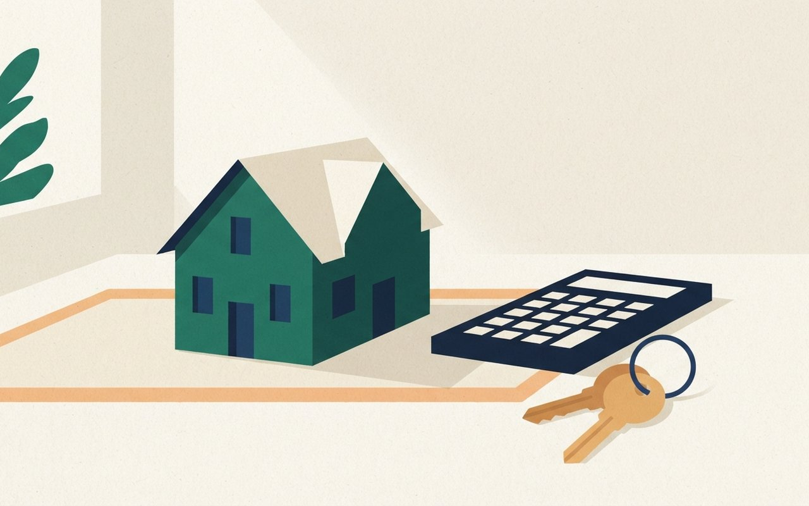
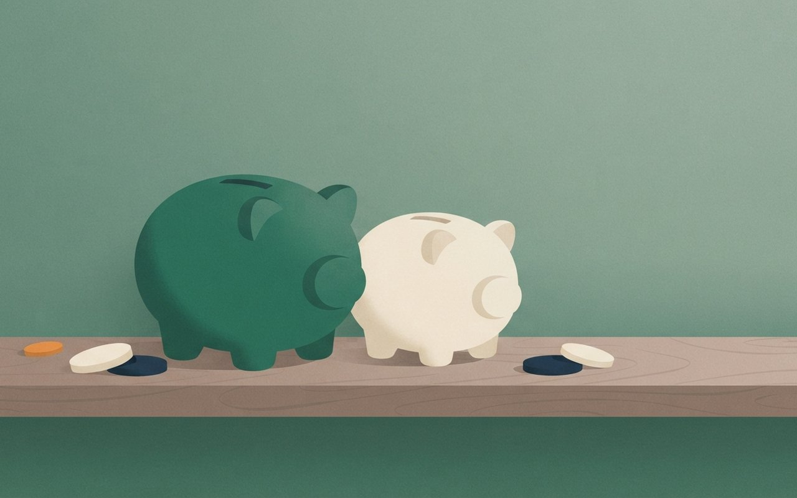

🎧 낭독 원고 보기
10월 27일 화요일, 머니 브리프입니다.
다음 달 실손보험 1·2세대는 5세대로 갈아타면 보험료를 3년간 50% 깎아 줍니다. 기존 계약을 유지하면서 보장 항목을 고르는 선택형 특약도 있습니다. 전환 뒤 3개월 안에는 조건 없이 철회할 수 있고, 3년 뒤에는 할인이 끝납니다.
문화누리카드와 청년문화예술패스 신청은 11월 30일까지입니다. 문화누리카드는 연 15만 원이고 쓰는 기한은 12월 31일, 남은 잔액은 반납됩니다. 청년문화예술패스는 2006~2007년생이 대상이고 2차 신청은 선착순입니다. 에너지바우처 신청은 12월 31일까지입니다.
한국은행은 22일 기준금리를 연 3.00%로 동결했습니다. 7명 만장일치였고, 올해 7월과 8월 두 번 올린 뒤 숨을 골랐습니다. 다음 금통위는 11월 26일입니다.
주택담보대출은 5대 은행 5년 고정이 연 4.61에서 6.65%, 6개월 변동이 4.42에서 6.48%입니다. 9월 COFIX는 3.43%로 한 달 새 0.25%p 올랐고, 5억 원 대출이면 금리가 0.25%p 오를 때 연 이자가 약 125만 원 늘어납니다.
25일 기준 1년 정기예금 평균은 저축은행 3.82%, 5대 은행 3.61%로 0.21%p 차이가 납니다. 4% 이상 우대금리 상품은 저축은행에서 113개에서 67개로 줄었습니다.
26일 원·달러 환율 종가는 1,323.1원으로, 올해 최고인 7월 2일보다 232.7원 낮습니다. 27일 종가는 확인하지 못했습니다. 달러로 결제할 일이 있다면 오늘 환율을 먼저 확인해 보세요.
이상 머니 브리프였습니다. 금리와 환율은 수시로 바뀌니 변동될 수 있고, 정보 제공 목적이며 투자 판단은 본인에게 있습니다.
保
실손 갈아타기
실손 1·2세대, 11월부터 보험료 낮추는 길 두 가지 — 5세대로 전환하면 3년간 50% 할인
재가입 의무가 없는 2013년 3월 이전 가입 실손보험 1·2세대(보유계약 1,643만 6,474건)를 대상으로 11월에 보험료 할인 방법 두 가지가 시행될 예정이다(구체적인 날짜는 두 기사 모두 "다음 달"로만 나온다). 하나는 5세대로 전환하면 5세대 보험료를 3년간 50% 깎아 주는 계약전환 할인이고, 이데일리에 따르면 시행 후 6개월간 운영한 뒤 연장 여부를 검토한다. 다른 하나는 기존 계약을 유지한 채 도수치료·체외충격파·비급여 주사제, 비급여 MRI·MRA 중 보장에서 뺄 항목을 고르거나 자기부담률 20%를 적용하는 선택형 할인특약이다.
아주경제 예시로 1세대 60대 여성의 월 보험료는 17만 8,489원에서 할인 기간 2만 1,270원이 된다(기존 상품과 기본 보험료 차이가 함께 반영된 값). 전환 뒤 철회는 3개월 이내면 조건 없이, 3~6개월은 보험금 지급 사유가 없을 때만 된다. 5세대의 비급여 자기부담률은 중증 30%, 비중증 50%다. 9월 말까지 자발적으로 전환한 계약은 9개 손보사 합계 3만 3,577건으로 1·2세대 보유계약의 약 0.20%다.
- 시행2026년 11월 예정 ⚠ 구체적 날짜는 기사에 없음
- 전환 할인5세대 보험료 3년간 50% 할인 · 시행 후 6개월 운영, 연장 여부 검토
- 선택형 특약도수치료 등 보장 제외 선택 또는 자기부담률 20% 적용(기존 계약 유지)
- 철회3개월 이내 조건 없이 · 3~6개월은 지급 사유가 없을 때만
- 전환 실적9월 말 3만 3,577건 · 1·2세대 보유계약의 약 0.20%
💰 알고 보면 달라지는 것
할인은 3년 뒤 끝나고 이후에는 할인 전 보험료가 적용된다. 기사들은 도수치료나 비급여 주사를 자주 받는 사람이라면 보험료는 줄어도 본인 부담이 늘 수 있다고 짚는다. 내 실손이 몇 세대인지 보험증권이나 보험사 앱에서 먼저 확인하고, 최근 1년 비급여 이용 횟수와 절감액을 나란히 놓고 비교해 볼 만하다.
아주경제 — 1·2세대 할인 예시 이데일리 — 운영 기간·철회
전환 50% 할인·1세대 60대 여성 월 보험료 예시는 아주경제(10/15 17:30) · 6개월 운영·철회 기준·5세대 비급여 자기부담률·전환 건수 3만 3,577건은 이데일리(10/26 15:33) · 전환 건수는 9월 기사에 1만 9,134건으로 다르게 나와 최신 값을 썼다 · 선택형 특약의 보험료 인하율은 매체별로 표기가 달라 싣지 않았다 (확인 2026-10-27)
실손 1·2세대,
11월 할인 두 가지
11월부터 실손 1·2세대가 5세대로 갈아타면 보험료를 3년간 깎아 줘요. 전환 뒤 3개월 안에는 조건 없이 철회할 수 있어요.
3개월|전환 뒤 조건 없이 철회
3년 뒤 할인 종료 / 3개월 내 철회 가능
A person sitting at a tidy desk by a window reviewing printed insurance paperwork with a calculator and a cup of tea, soft morning light, calm mood, flat illustration, no text, no logos, no brand names
期
연내 마감
11월 30일 전에 신청 — 문화누리카드·청년문화예술패스, 연말까지 챙길 혜택
아주경제 정리에 따르면 문화누리카드(기초생활수급자·차상위 중 6세 이상)는 연 1인 15만 원(13~18세·60~64세는 16만 원)이고 신규 발급·재충전은 11월 30일까지다. 쓰는 기한은 12월 31일이며 남은 잔액은 이월되지 않고 국고로 반납된다. 청년문화예술패스는 2006~2007년생이 대상으로 수도권 15만 원, 비수도권 20만 원이고 생애 1회다. 2차 신청은 11월 30일까지 선착순이다.
에너지바우처는 생계·의료·주거·교육급여 수급 가구 중 노인·영유아·장애인·임산부 등이 있는 가구가 대상이고 신청은 12월 31일까지다(1인 가구 29만 5,200원). 연금저축은 연 600만 원, IRP 포함 합산 900만 원까지 세액공제를 받고, 공제율은 총급여 5,500만 원 이하 16.5%, 초과 13.2%다. 고향사랑기부제는 10만 원까지 전액 공제되며 연내 기부해야 한다.
- 문화누리카드연 1인 15만 원 · 신규·재충전 ~11/30 · 사용 ~12/31(잔액 반납)
- 청년문화예술패스2006~2007년생 · 수도권 15만 원/비수도권 20만 원 · 2차 ~11/30 선착순 ⚠ 변동 가능
- 에너지바우처1인 가구 29만 5,200원 · 신청 ~12/31
- 연금계좌 공제연금저축 600만 원 · IRP 합산 900만 원 · 16.5%(총급여 5,500만 원 이하)/13.2%
- 고향사랑기부10만 원까지 전액 세액공제 · 연내 기부
💰 알고 보면 달라지는 것
마감이 11월 30일인 것은 문화누리카드와 청년문화예술패스 두 가지다. 해당하는 가족이나 주변에 있으면 이번 달 안에 알려 주는 것이 가장 쓸모 있다. 사용 기한 12월 31일이 지나면 문화누리카드 잔액은 돌려받지 못하고, 연말 결제 취소로 환불이 늦어지면 못 쓸 수도 있다는 점도 기사에 나온다.
아주경제 — 연내 마감 혜택 정리
모든 수치는 아주경제(10/21 11:15) 단일 기사 · 두 번째 매체 교차 확인은 하지 못해 금액·대상은 신청 전 공식 안내 확인 필요 · 지난해 지원금을 쓴 청년 등 제외 조건은 싣지 않음 (확인 2026-10-27)
11월 30일 마감,
연말 혜택 챙기기
문화누리카드와 청년문화예술패스 신청은 11월 30일까지예요. 쓰는 기한은 12월 31일이고 남은 문화누리카드 잔액은 이월되지 않고 반납돼요.
~11/30
15만 원|문화누리카드 연 1인
A bright wall calendar with a late-autumn page beside a small stack of colorful ticket cards and a pen on a wooden table, warm light, flat illustration, no text, no numbers, no logos
金
기준금리
한국은행 기준금리 연 3.00% 동결 — 7명 만장일치, 다음 금통위는 11월 26일
한국은행 금융통화위원회가 22일 기준금리를 연 3.00%로 동결했다. 7명 만장일치였고 인상을 주장한 소수의견은 없었다(파이낸셜뉴스·경향신문). 금리는 올해 7월과 8월 두 차례 올랐고 이번에 숨을 골랐다. 의결문은 "두 차례 인상의 파급 영향을 점검할 필요가 있다"고 밝혔고, 신현송 총재는 물가 목표 2%에 이를 때까지 긴축 기조를 이어가겠다고 말했다(경향신문).
시장에서는 11월 인상을 점치는 시각이 있다. iM증권 연구원은 11월 3.25%, 내년 1분기 3.5%를 전망했다(경향신문 인용, 전망일 뿐 결정된 것은 아니다). 소비자물가 상승률은 9월 2.9%였고 올해 물가 전망은 2.7%다. 올해 마지막 금통위는 11월 26일이고, 그 전에 11월 2일 10월 소비자물가가 나온다.
- 결정2026-10-22 금통위 · 기준금리 연 3.00% 동결 · 7명 만장일치
- 흐름올해 7월·8월 두 차례 인상 → 이번 동결
- 물가9월 소비자물가 2.9% · 올해 물가 전망 2.7%
- 다음 일정11/2 10월 소비자물가 발표 · 11/26 올해 마지막 금통위
- 전망iM증권: 11월 3.25%, 내년 1분기 3.5% (애널리스트 전망 ⚠ 변동 가능)
💰 알고 보면 달라지는 것
금리는 지금 멈췄지만 방향이 정해진 것은 아니다. 변동금리 대출이 있다면 11월 26일 전에 내 금리 재산정일과 월 이자를 확인해 두는 정도가 현실적이다. 11월 인상을 점치는 시각이 시장에 많지만 결정된 것은 아니고, 3.25%·3.5%는 iM증권 한 곳의 구체 전망이다. 달력에 11월 2일과 26일만 표시해 두고 확정 소식을 기다리면 된다.
파이낸셜뉴스 — 동결 결정 경향신문 — 총재 발언·전망
동결·만장일치·의결문 문구는 파이낸셜뉴스(10/22 10:55)·경향신문(10/22 21:59) 일치 · 총재 발언·iM증권 전망·물가 전망 2.7%는 경향신문 · 9월 물가 2.9%는 두 기사 · 일정(11/2·11/26)은 두 기사 기준 (확인 2026-10-27)
기준금리 동결,
다음 갈림길은 11월
한국은행이 22일 기준금리를 연 3.00%로 동결했어요. 올해 7월과 8월 두 번 올린 뒤 숨을 골랐고, 다음 금통위는 11월 26일이에요.
3.00%|현재 기준금리
11/26 다음 금통위 / 11/2 10월 물가 발표
3.00%|현재 기준금리
A brass balance scale held perfectly level on a wooden desk beside a small desk calendar and a cup of tea, calm morning light, flat illustration, no text, no numbers, no logos
貸
주담대 금리
주담대 5년 고정 연 4.61~6.65%, 6개월 변동 4.42~6.48% — COFIX는 46개월 만에 가장 크게 올라
파이낸셜뉴스에 따르면 KB·신한·하나·우리·NH 5대 은행의 주택담보대출 금리는 5년 고정형 연 4.61~6.65%, 6개월 변동형 연 4.42~6.48%다. 지난달 말보다 고정형은 하단 0.30%p, 상단 0.25%p 내렸고, 상단 기준 고정과 변동의 차이는 0.17%p로 거의 없다. 은행채 5년물이 4.53%에서 23일 4.28%로 내린 영향이다.
변동금리의 기준이 되는 COFIX는 9월분 3.43%로 8월(3.18%)보다 0.25%p 올라 2024년 6월(3.52%) 이후 가장 높고 월간 상승폭은 46개월 만에 최대다. 올해 4분기에 금리가 다시 정해지는 변동금리 주담대 잔액이 165조 원이다. 5억 원을 빌린 경우 금리가 0.25%p 오르면 연 이자가 약 125만 원 늘어난다.
- 고정(5년)연 4.61~6.65% · 지난달 말보다 하단 −0.30%p·상단 −0.25%p
- 변동(6개월)연 4.42~6.48% · 5대 은행 · 10/27 기사 기준 ⚠ 변동 가능
- COFIX9월 3.43% · 8월 3.18% · 2024년 6월 3.52% 이후 최고 · 46개월 만에 최대 상승폭
- 이자 예시5억 원 대출 · 금리 0.25%p 상승 시 연 이자 약 125만 원 증가
- 재산정 대상올 4분기 금리 재산정 변동금리 주담대 165조 원
💰 알고 보면 달라지는 것
변동과 고정의 금리 차이가 0.17%p로 좁아져 갈아탈지 따져 볼 시점이긴 하지만, 중도상환 수수료와 갈아타기 한도 같은 조건은 기사에 없어 은행에서 확인해야 한다. 먼저 내 대출의 금리 재산정일이 언제인지 보고, 금리가 0.25%p 오를 때 늘어나는 이자 125만 원(5억 원 기준)을 내 대출 규모로 환산해 보자. 대출 상품을 권하는 글이 아니다.
파이낸셜뉴스 10/27 — 5대 은행 금리·COFIX 파이낸셜뉴스 10/22 — 같은 날 다른 집계
금리 범위·COFIX·은행채·165조는 파이낸셜뉴스(10/27 06:05) · 이자 예시도 10/27 기사 · 10/22 기사는 10/22 기준 다른 집계(고정 4.63~6.66%, 변동 4.41~6.51%)로 약간 달라 10/27 기사 값을 썼다 (확인 2026-10-27)
COFIX 46개월 만에
최대 폭 상승
9월 COFIX가 3.43%로 한 달 새 0.25%p 올랐어요. 5억 원 대출이면 금리가 0.25%p 오를 때 연 이자가 약 125만 원 늘어요.
8월 3.18%|+0.25%p|9월 3.43%
125만 원|5억 대출 연 이자 증가
A small model house on a table next to a calculator and a pair of house keys, soft daylight, calm mood, flat illustration, no text, no numbers, no logos

預
예금 금리
1년 정기예금 평균 — 저축은행 연 3.82%, 5대 은행 3.61%로 0.21%p 차이
아주경제에 따르면 25일 기준 79개 저축은행의 1년 정기예금 평균 금리는 연 3.82%, 5대 은행 평균은 3.61%로 차이는 0.21%p다. 연 4% 이상 우대금리 상품은 저축은행에서 7월 말 113개에서 이달 67개로 줄었다.
15일 기사 기준 인터넷은행 3사 평균은 3.66%(케이뱅크 3.71%, 카카오뱅크 3.70%, 토스뱅크 3.60%)이고, 시중은행 가운데 1년 만기 최고금리가 4%를 넘는 상품은 BNK경남은행 The든든예금 4.10%, SC제일은행 e-그린세이브예금 4.05%다. 신한은행은 기본 3.6%에 우대 0.4%p를 더한 4.0%인데 신규 가입·급여이체 등 조건이 붙고 한정 판매다. 한국경제 19일 기사에는 저축은행 평균 3.80%, 5대 은행 3.55%로 나온다.
- 저축은행(79곳)1년 평균 연 3.82% (10/25) · 4% 이상 상품 113개 → 67개
- 5대 은행1년 평균 연 3.61% (10/25) · 차이 0.21%p
- 인터넷은행 3사(10/15 기사)평균 3.66% · 케이뱅크 3.71% · 카카오 3.70% · 토스 3.60%
- 4%대 상품BNK경남 4.10% · SC제일 4.05% · 신한 4.0%(조건부, 한정 판매) ⚠ 최고금리·우대 조건 확인
💰 알고 보면 달라지는 것
평균 차이는 0.21%p이므로 1,000만 원을 1년 맡기면 이자 차이가 약 2만 원 수준이다(평균 금리 기준 단순 계산, 세금 제외). 만기가 돌아오는 예금이 있다면 우대 조건(급여이체 등)을 충족하는지가 실제 금리를 좌우한다. 특정 상품을 권하는 것이 아니라 평균과 조건을 비교하는 자료로 읽자.
아주경제 10/25 — 업권별 평균 아주경제 10/15 — 4%대 상품 한국경제 — 평균 금리 추이
평균은 아주경제(10/25 15:02) · 인터넷은행·4%대 상품은 아주경제(10/15 16:29) · 4% 이상 상품 113→67개는 아주경제 값(한국경제는 다르게 집계) · 한국경제(10/19 17:48)는 저축은행 3.80%·5대 은행 3.55%로 기준일과 상품 범위가 달라 날짜를 붙여 구분했다 · 이자 약 2만 원은 평균 차이 0.21%p로 계산한 값 (확인 2026-10-27)
저축은행 vs 5대 은행,
예금 평균 차이는
25일 기준 1년 정기예금 평균은 저축은행 3.82%, 5대 은행 3.61%예요. 연 4% 이상 상품은 저축은행에서 67개로 줄었어요.
저축은행:3.82|5대 은행:3.61
0.21%p|업권 간 평균 격차
Two ceramic piggy banks of slightly different sizes side by side on a shelf with coins scattered nearby, soft pastel light, flat illustration, no text, no numbers, no logos

換
환율
원·달러 환율 1,323.1원 마감 — 올해 최고(7월 2일)보다 232.7원 낮아, 2년 만의 최저권
서울신문에 따르면 26일 서울 외환시장에서 원·달러 환율은 주간 거래 종가(오후 3시 30분) 기준 1,323.1원으로 전 거래일보다 1.5원 내렸다. 2024년 10월 2일(1,319.3원) 이후 약 2년 만의 최저권이다. 올해 최고는 7월 2일의 1,555.8원으로 이보다 232.7원 낮다.
환율이 앞으로 어디로 갈지는 단정하기 어렵다. 이 카드의 값은 26일 종가이며 27일 종가는 확인하지 못했다.
- 26일 종가1,323.1원(주간 거래 15:30 기준) · 전일 대비 −1.5원
- 2년 전 저점2024년 10월 2일 1,319.3원
- 올해 최고7월 2일 1,555.8원 → 232.7원 낮아짐
- 주의⚠ 환율은 매일 바뀜 · 27일 종가는 미확인
💰 알고 보면 달라지는 것
달러로 결제할 일이 있다면(해외여행·직구·유학비 송금) 오늘 환율을 확인하는 것이 먼저다. 1,555.8원이던 7월에 비해 달러당 232.7원 낮아졌다는 것이 기사 숫자이고, 앞으로의 방향은 기사에 없어 이 카드에서 예측하지 않는다. 환전이나 외화 투자를 권하는 내용이 아니다.
서울신문 — 26일 환율 마감
종가·전일 대비·2년 만의 저점·올해 최고 모두 서울신문(10/26 18:06) 단일 기사 · 전망은 매체마다 달라 싣지 않음 · 10/27 종가는 미확인 (확인 2026-10-27)
환율 1,323.1원,
2년 만의 최저권
26일 원·달러 환율 종가는 1,323.1원으로 2년 만의 최저권이에요. 올해 최고였던 7월 2일의 1,555.8원보다 232.7원 낮아요.
232.7원|올해 최고(7/2)보다 낮아요
A travel suitcase and a passport-free open wallet with banknotes beside a small globe on a desk, bright airy light, flat illustration, no text, no numbers, no logos, no real currency design